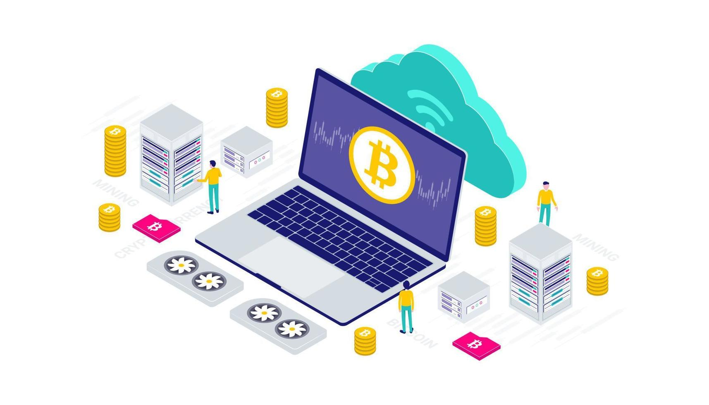

Absorber les surplus
Un barrage ou un parc éolien qui produit plus que la demande peut vendre son excédent à des mineurs plutôt que de brider ses turbines. L'énergie qui serait perdue devient un revenu qui finance l'installation.
Le minage est le poste de dépense qui protège le réseau. C'est aussi le sujet qui fâche : parlons d'énergie.

Ils sécurisent le réseau et valident les transactions. Concrètement, un mineur rassemble les transactions en attente, forme un bloc, puis cherche par essais successifs l'empreinte qui rendra ce bloc valide. Le premier qui trouve diffuse son bloc, les autres le vérifient et l'acceptent, puis repartent sur le suivant.
En échange, il reçoit la récompense de bloc (3,125 BTC depuis avril 2024) et les frais des transactions incluses. Cette récompense est la seule façon de créer de nouveaux bitcoins.
Pas d'autorité centrale, chaque mineur participe au consensus. N'importe qui peut rejoindre ou quitter le réseau sans autorisation. Cette ouverture a un revers : la concentration. La majorité de la puissance de calcul est aujourd'hui regroupée dans quelques grandes coopératives de minage, ce qui fait l'objet d'une surveillance constante de la communauté.
C'est le point le plus mal compris. L'électricité n'est pas gaspillée pour « faire des calculs inutiles » : elle sert à rendre l'attaque trop chère. Pour réécrire l'historique, il faudrait contrôler plus de la moitié de la puissance de calcul mondiale du réseau, donc acheter et alimenter autant de machines que tous les autres mineurs réunis — pour un gain incertain, et en détruisant au passage la valeur de ce qu'on attaque.
Autrement dit, la dépense énergétique est le dispositif de sécurité. Un réseau qui consomme peu serait un réseau bon marché à attaquer.
Le minage est critiqué pour sa consommation énergétique, et la critique est légitime : elle se compte en dizaines de térawattheures par an, soit l'ordre de grandeur d'un pays de taille moyenne. Deux nuances doivent cependant être apportées.
D'abord, ce qui compte n'est pas seulement la quantité d'énergie mais sa nature et son moment. Une machine de minage est mobile, elle se branche là où l'électricité est peu chère — c'est-à-dire là où elle est excédentaire et où personne d'autre ne la consomme.
Ensuite, une ferme de minage est un consommateur interruptible. Elle peut s'arrêter en quelques secondes sur demande du réseau électrique, ce qu'aucune usine classique ne sait faire. Cette souplesse en fait un outil de régulation autant qu'une charge.
Un réseau électrique doit produire exactement ce qui est consommé, à chaque instant. Les sources renouvelables compliquent cet équilibre : le solaire produit à midi, le vent quand il souffle, pas quand on en a besoin. Le surplus est alors soit stocké, soit perdu.
Un barrage ou un parc éolien qui produit plus que la demande peut vendre son excédent à des mineurs plutôt que de brider ses turbines. L'énergie qui serait perdue devient un revenu qui finance l'installation.
Lors d'un pic de consommation, le gestionnaire du réseau demande aux fermes de s'arrêter. Elles coupent en quelques secondes et libèrent instantanément leur puissance pour les foyers. Ce service est rémunéré.
Sur les sites pétroliers, le gaz associé est souvent brûlé à la torche faute de pouvoir être transporté. Le convertir en électricité sur place pour miner évite un rejet pur et sans contrepartie.
Le biogaz issu de la décomposition des déchets est un gaz à effet de serre bien plus puissant que le CO₂. Le capter pour alimenter des machines le neutralise tout en produisant un revenu.
Une machine de minage transforme la quasi-totalité de son électricité en chaleur. Des projets l'utilisent pour chauffer des serres, des piscines municipales ou des immeubles, remplaçant une chaudière.
Une centrale neuve produit souvent plus que la demande locale à ses débuts. Le minage sert de client de dernier recours le temps que le réseau se développe autour.
Ces pistes ne rendent pas le minage neutre pour autant : elles déplacent le débat de « combien consomme-t-on » vers « quelle énergie, et à la place de quoi ».
Parce qu'il nécessite une puissance de calcul très importante. Cette dépense n'est pas un défaut de conception : c'est elle qui rend une attaque du réseau économiquement absurde.
Oui, mais la concurrence et la difficulté rendent cela coûteux. Miner seul avec un ordinateur ordinaire ne rapporte plus rien depuis longtemps : il faut du matériel dédié et une électricité bon marché.
Vers 2140, il n'y aura plus de récompense de bloc. Les mineurs seront alors rémunérés uniquement par les frais de transaction payés par les utilisateurs.
D'autres réseaux ont adopté la preuve d'enjeu, qui consomme très peu. Bitcoin conserve la preuve de travail parce qu'elle ancre la sécurité dans une dépense réelle et extérieure au système, et non dans la détention de la monnaie elle-même.